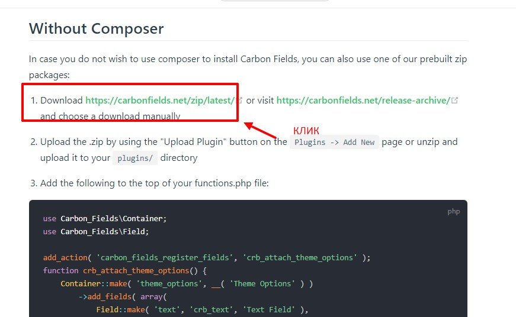
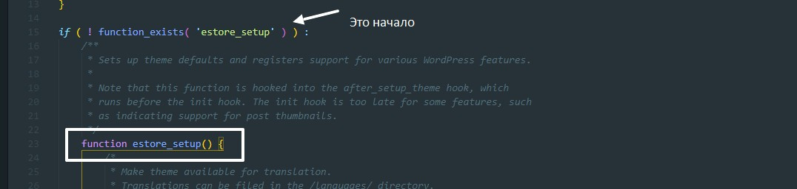

1 В папке с темами Wordpress создаем папку, например назовем ее e-store
Далее в этой папке необходимо создать файлы:
После этого в консоле Wordpress появится наша тема
2 Далее идем на https://underscores.me/ жмем на Advanced Options
Вписываем имя нашей темы и ставим галочку woocommerce, после чего жмем сгенерировать
3 У сгенерированной темы, все штатные файлы копируем в папку с нашей темой в Wordpress
Удаляем файлы:
Так же в папку с темой копируем папку из сгенерированной темы template-parts - в этой папке будут храниться части кода, которые относятся к ками-то страницам. Например вывод карточки товаров. Т.е. в том разделе где нам надо поместить этот участок кода, мы просто будем обращаться к этому файлу.
4 Приводим в порядок файл style.css. Копируем содержимое style.css из сгенерированной темы и переносим в наш файл. В начале файла правим данные нашей темы
Что касается стилей которые прописаны в style.css генератором. Там указаны стили normalyze. Если верстка была выполнена с использованием Bootstrap, то эти стили можно закомментировать, т.к. в Bootstrap уже встроены эти стили.
5 Далее в папке с темой в Wordpress создаем папку templates - в этой папке будут храниться шаблоны страниц, например в этой папке можно создать файл main-page.php (шаблон главной страницы сайта)
6 Далее в папке с темой в Wordpress создаем папку includes - в этой папке будут храниться весь функционал. В эту папку копируем файлы из папки inc сгенерированной темы через underscores
7 Далее в папке с темой в Wordpress создаем папку assets - это общая папка для фронтенда. В этой папке должны быть подпапки:
В эти папки переносим скрипты картинки и стили из верстки
8 Далее в папке с темой в Wordpress создаем папку woocommerce - В эту папку мы скопируем файлы из плагина самого woocommerce, НО! Внутри этой папки создаем еще одну директорию includes, в этой папке должен быть файл который будет отвечать за наши отношения с Woocommerce, этот файл должен называться wc-functions.php. Там же создаем еще один файл - wc-functions-remove.php. В этом файле мы будем выключать глобально некоторые настройки
9 Далее нам необходимо определить, на чем мы будем делать функционал и настройки произвольных полей нашей темы. Для этого будем использовать фреймворк carbonefields
Заходим на офф сайт этого фреймворка и жмем внопку скачать
Скаченный архив разархивируем и папку carbon-fields помещаем в папку wp-content\themes\e-store\includes
СКАЧЕННЫЙ АРХИВ У МЕНЯ ВЫДАВАЛ ФАТАЛЬНУЮ ОШИБКУ. ВОТ ССЫЛКА НА НОРМАЛЬНУЮ ВЕРСИЮ Архив
10 Все что нам остается сделать - это все правильно переподключить, что бы избежать фатальных ошибок и варнингов. Для этого открываем файл functions.php в корне темы Wordpress
В папке includes (которая находится в корне темы) создаем файл theme-settings.php
В этот файл добавляем вот такой код:
Далее из файла functions.php (который находится в корне темы) необходимо вырезать объявление функции estore_setup вместе с ее вызовом
И вставить в только что созданный файл theme-settings.php
Из этой функции УДАЛЯЕМ строчку load_theme_textdomain и register_nav_menus (nav_menu - мы сделаем отдельным файлом)
custom-background так же удаляем. В итоге файл будет выглядеть вот так:
Теперь нужно подключить этот файл в functions.php. Подключаем вот таким образом (в самом начале файла прописываем строчку)
Вот этот кусок кода, так же отвечает за ширину отображения контента, его та же надо перенестив файл theme-settings.php (копируем этот участок кода в самый конец файла).
Регистрация виджетов. Для виджетов сделаем так же отдельный файл в папке includes. Назовем его widget-areas.php и в этот файл копируем вот этот участок
Точно так же в начало файла добавляем код
После копируем вот этот
Не забываем подключить только что созданный файл в functions.php
Далее у нас идет подключение скриптов и стилей, для них мы тоже делаем отдельный файл enqueue-script-style.php
Процедура все та же, сначала условие if (! defined('ABSPATH')). Затем копируем из functions.php вот такой кусок
И точно так же подключаем этот файл в functions.php

Вообще хорошей практикой считается разделять подключение стилей и скриптов в отдельные функции, т.е. файл enqueue-script-style.php в итоге будет выглядетьпримерно так: (опять же пути до файлов скриптов и стилей пока указан не корректно т.к. мы эти файлы пока не переносили)
Теперь поправим пути до файлов которые нам сгенерировал генератор темы. (эти файлы мы поместили в папку includes, а пути указаны как inc)
Еще раз - мы в файле functions.php который находится в папке с темой wordpress поправили пути до файлов которые теперь находятся в папке includes
11 Теперь открываем файл woocommerce.php который находится в папку includes/ Здесь на мнужна строчка
Эта строчка отвечает за отключение всех скриптов, ее перемещаем в файл wc-functions-remove.php который находится в папке woocommerce/includes
Так же в начало файла wc-functions-remove.php помещаем уже знакомый нам код
Далее этот участок кода из файла woocommerce.php мы переносим в файл настройки темы theme-settings.php
12 Теперь необходимо подключить carbon-fields и файлы wc-functions-remove.php и wc-functions.php которые находят в woocommers/includes
Подключать мы будем в functions.php. В самом конце файла находим вот такой участок
И добавляем две строчки что бы все выглядело вот так
13 Подключаем carbon-fields. Для этого в папке includes корневой папки темы, создаем папку custom-fields-options. В этой директории мы создаем парочку файлов.
Теперь что бы подключить carbon-fields в файле function.php d начало файла добавляем вот такой код:

Теперь чуть нижу добавим вот такой код для подключения двух файлов которые только что создали (theme-options.php и metabox.php)
Теперь в файлы theme-options.php и metabox.php добавляем такой код:
Так же в штсдгвуы добавляем файл helper который поможет дебажить код. Файлик можно скачать в готовом шаблоне